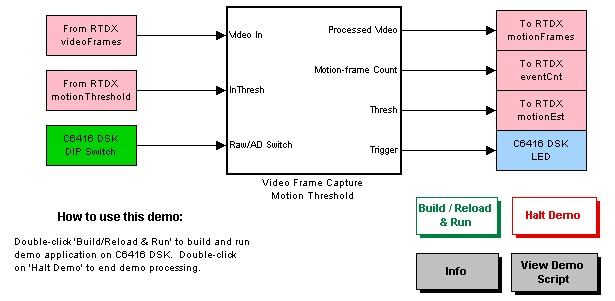
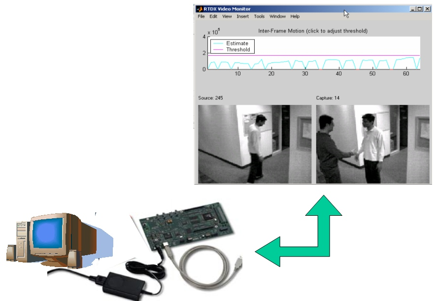
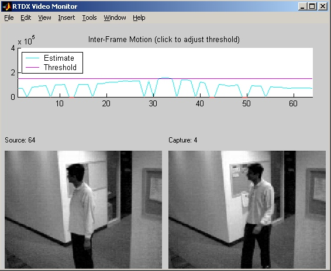

C6000
Video Surveillance and Motion-Detection Demo
This Simulink model demonstrates a video surveillance application on your
Texas Instruments DSP Starter Kit using Embedded Target for Texas Instruments
TMS320C6000 DSP Platform. A motion-detection algorithm is implemented
in Simulink and deployed to the 'C6416 fixed-point signal processor.
Note: This demo uses High-Speed RTDX. To run this demo, you must have an XDS-560 emulator connecting your
host computer to your C6416 DSK. Be sure to load the correct GEL file, dsk6416.gel, to set up the memory map for this board.
Opening the demo model
Click or type c6416dsksurveil_hsrtdx

How it works
Double-click on the subsystem "Video Frame Capture Motion Threshold" to
view its contents. The algorithm is implemented using
blocks from Simulink and Signal
Processing Blockset and is converted to C by Real-Time Workshop. While the generated code is running on
the 'C6416 DSP target, MATLAB simultaneously writes video frames to the target
via Real-Time Date Exchange (RTDX). The target accepts the frames upon timer
interrupts scheduled at 15 times per second. The algorithm computes the
sum of the absolute value of differences (SAD) between successive video frames,
returning a useful estimate of motion. When the motion estimate value exceeds
a threshold, the 'C6416 increments a counter and sends the corresponding frame
back to the host.

Starting the demo
Double-click "Build / Reload & Run" button to initiate the demo script.
Real-Time Workshop, together with Embedded Target for TI C6000 DSP, will
generate code for the model.* When the code-generation process
is complete, the Embedded Target will automatically create a project in Code
Composer Studio, compile it, link it, download it, and execute it on the
board. The demo script will then initiate the transfer of video frames via
RTDX and display the input and output frames on your screen.
* If you have already generated and compiled the code, the button should
automatically skip code generation and simply reload the program. However,
if you have changed the model, you may be asked whether you wish to generate
code again or simply to reuse the project that has already been created.
When the demo begins execution on the 'C6416, you should see the RTDX Video
Monitor appear on your screen.

On the left side, MATLAB plots the raw image data that is being sent to
the 'C6416 target at 15 frames per second. On the right side, MATLAB plots
the captured frames received from the 'C6416; these are the frames in which
the algorithm detected motion. At the top, you can see a running plot (moving
from right to left, with the most recent data at the right) of the motion
estimate value together with the threshold value.
Controlling the algorithm
You can change the behavior of the application while it's running on the
C6416 DSK.
To change the type of display for the video output, you can move User DIP
Switch 0. The User DIP Switches on the C6416 DSK are located in package
"SW1" on the printed circuit board and are numbered 0 to 3 (1 to 4 on the
side of the package itself). Press a switch down to turn it on.
- Off: The captured
frames are displayed in raw form, frozen until the next motion event.
- On: The absolute
differences from frame to frame (AD) are displayed.
Also, you can adjust the motion threshold by clicking directly on the moving
plot on your screen. Clicking on the plot causes a message to be sent to
the target via the RTDX channel "motionThreshold". The target will immediately
begin using the new threshold value corresponding to the vertical position
of your mouse click. A higher threshold value corresponds to a decreased
frequency of motion-detection events.
You can also see motion events on User LED 0, located next to the DIP Switch
package. Whenever motion is detected, the LED turns on briefly.
Troubleshooting
If you experience problems running the demo:
- Reset the 'C6416.
- Reset the XDS560 emulator
. (This requires closing Code Composer Studio and clearing the MATLAB workspace.)
- You cannot run this particular
demo's generated code on its own, because the target will not do anything
without RTDX input. You must use the buttons in the model to start and stop
the demo, so that the accompanying MATLAB script will be invoked.
- Be sure to use the "Halt
demo" button to stop demo execution. This button includes the necessary
statements to close and disable RTDX channels (via MATLAB Link for Code Composer
Studio).
Copyright 2002-2003 The MathWorks, Inc.
$Revision: 1.1.6.2 $